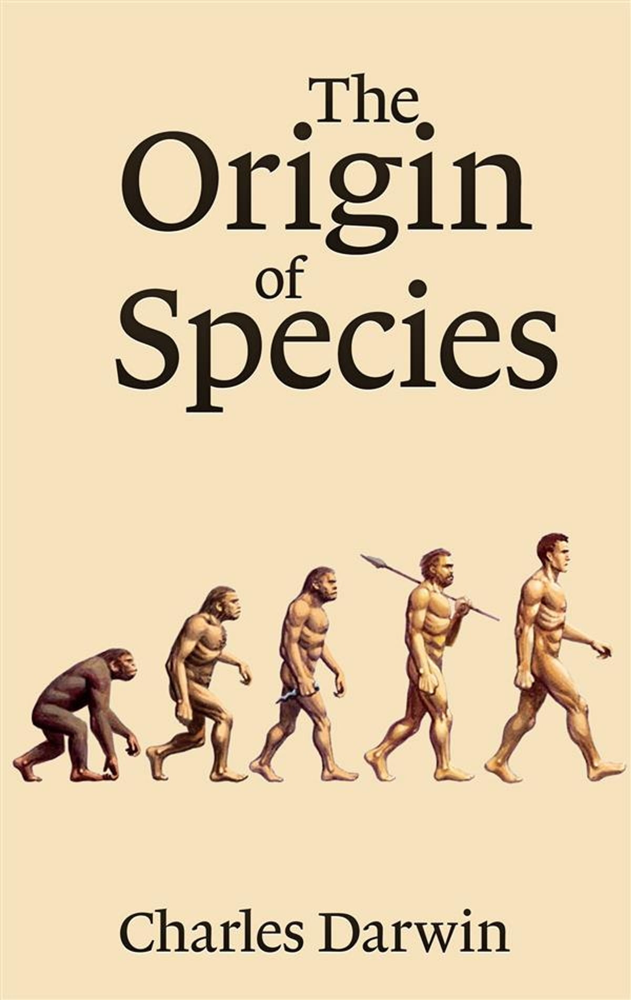

Книги, що змінили історію
1984
Джордж Орвелл
Антиутопічний роман, який досліджує теми влади, тоталітаризму та контролю над масами. Ця книга вплинула на політичну та соціальну думку у всьому світі.

Походження видів
Чарльз Дарвін
Революційна праця, яка заклала основи теорії еволюції та природного відбору. Ця книга змінила розуміння біології та походження життя на Землі.
Капітал
Карл Маркс
Ця книга стала основою для соціалістичної та комуністичної теорії, аналізуючи капіталістичну економіку та її вплив на суспільство.
Медитації
Марк Аврелій
Класична філософська праця, яка вплинула на розвиток моралі та філософії. Ця книга є збірником мислення Марка Аврелія, імператора Риму.

Біблія
Найвідоміша книга у світі, яка має величезний релігійний і культурний вплив протягом тисячоліть. Вона стала основою для багатьох релігійних та моральних систем.
Біблія
Найвідоміша книга у світі, яка має величезний релігійний і культурний вплив протягом тисячоліть. Вона стала основою для багатьох релігійних та моральних систем.